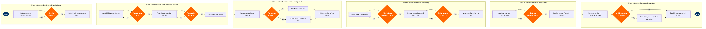

| Step | L4 Step Name | KPI / Target | Pain Point / Risk | Gate |
|---|---|---|---|---|
| 1.1 | Capture new member application data | Enrollment completion rate ≥97%; form abandonment rate <3% | Members signing up through multiple channels (web, mobile, GDS booking) without email deduplication create duplicate records that inflate reported membership figures by up to 8% | |
| 1.2 | Validate identity and deduplicate profile | Duplicate member rate <0.5% of active member base | GDS-sourced bookings frequently lack email address, producing orphaned accounts that cannot be auto-merged; manual resolution queues exceed 5,000 records per month at large carriers | ⚠ |
| 1.3 | Assign base tier and post welcome bonus miles | Welcome bonus posting accuracy 100%; account activation within 24 hours of enrollment | Tier assignment rules not synchronised in real time between Comarch and Amadeus Altéa PSS; boarding pass may display incorrect tier for first flight taken within hours of enrollment | |
| 2.1 | Ingest flight segment data from PSS | Post-flight accrual data ingestion SLA ≤72 hours; segment match rate ≥99% | Altéa segment data may arrive with codeshare operating-carrier code mismatch, causing failed accrual lookups for interline and partner flights; exception queue can spike after irregular operations | |
| 2.2 | Calculate eligible miles per booking class | Accrual calculation accuracy ≥99.8%; rules table refresh within 4 hours of fare class change | Complex earning multipliers for co-brand card holders are not reflected in real time if card-link data lags from bank partner API by 24–48 hours; members earn base miles then must request adjustment | ⚠ |
| 2.3 | Post miles to member account | Miles posting success rate ≥99.9%; failed posting retry resolution within 4 hours | API timeout during peak post-travel periods (Monday 06:00–09:00 local) causes transaction queuing; backlog can delay posting beyond the 72-hour SLA, generating member service contacts | |
| 2.4 | Process retro-credit claim for missing miles | Retro-claim resolution ≤5 business days; auto-approval rate for flight claims ≥70% | Partner hotel and car-rental claims require manual verification due to absence of real-time partner transaction feeds; average handle time for partner retro-claims is 3× that of flight claims | ⚠ |
| 3.1 | Aggregate qualifying activity for tier review | Tier calculation batch processing time <4 hours for membership base ≥1M; completed by 02:00 local on qualification date | Year-end tier rollover processing creates Comarch database contention; programmes with >2M active members have experienced rollover jobs exceeding the maintenance window, delaying tier notifications by up to 48 hours | |
| 3.2 | Evaluate tier upgrade or downgrade eligibility | Tier assignment accuracy rate 100%; exception case resolution ≤2 business days | Tier criteria differ between earned-status and status-match members; exceptions are managed via manual spreadsheet outside Comarch, creating audit trail gaps and occasional erroneous downgrades that drive high-value member complaints | ⚠ |
| 3.3 | Notify member of tier change and updated benefits | Email open rate ≥35% for tier upgrade notifications; send within 2 hours of tier change | Salesforce Marketing Cloud integration with Comarch runs on nightly batch; real-time tier changes (e.g., reached Gold at midnight) are not reflected in communications until the following morning, delaying member recognition | |
| 3.4 | Provision tier benefits and flags in PSS | Benefit provisioning SLA ≤2 hours post-tier assignment; SSR flag accuracy 100% | Altéa profile update does not propagate to codeshare or interline partner carrier systems; lounge access flags may be absent on partner-operated flights, requiring manual override at airport — a top-5 elite member complaint driver | |
| 4.1 | Search and display award flight availability | Award availability search response time ≤3 seconds; award seat availability ≥5% of cabin capacity on operated flights | Award seat inventory is managed in a separate Altéa RM bucket from revenue inventory; RM team allocation rules are not always aligned with redemption demand, resulting in sub-optimal award availability that pushes members to competitors | |
| 4.2 | Validate member miles balance and expiry status | Balance check API response time ≤1 second; expiry warning accuracy 100% | Miles expiry rules differ by programme tier and earning source; expired-miles disputes are consistently in the top-3 contact centre drivers, each requiring manual audit of the 24-month transaction ledger | ⚠ |
| 4.3 | Process award booking and deduct miles | Redemption processing success rate ≥99.5%; dual-system transaction completion within 60 seconds | Dual-system transaction (Altéa PNR creation + Comarch deduction) has no atomic rollback; if Altéa confirms the PNR but Comarch times out, miles are not deducted, creating liability; or vice versa creating orphaned PNRs | |
| 4.4 | Issue award ticket via GDS or NDC channel | Award ticket issuance within 15 minutes of booking confirmation; ticketing failure rate <0.3% | ATPCO award fare filing delays can cause ticketing failures when a carrier updates its award chart mid-season without providing adequate lead time; agents must manually override fare basis codes, increasing error risk | ⚠ |
| 5.1 | Ingest partner earn transactions via SFTP or API | Partner file ingestion within 24 hours of transaction; data completeness rate ≥98% | Partner data formats are inconsistent across up to 15 active earn partners; each non-standard SFTP feed requires a bespoke ETL transform in AWS, with schema changes by partners breaking pipelines and delaying member mile postings | |
| 5.2 | Reconcile co-brand card spend accruals with bank | Reconciliation completion within 3 business days of month-end; variance rate <0.1% of total miles issued | Bank API transaction data is typically 24–48 hours delayed; real-time card spend accrual SLA commitments made to co-brand cardholders are not achievable with batch feeds, requiring liability provisioning estimates that create month-end restatements | ⚠ |
| 5.3 | Invoice partner for mile liability and settle AR | Invoice issued within 5 business days of month-end; DSO on partner invoices ≤30 days | Mile valuation disputes with hotel and retail partners are a recurring AR collection risk; no contractual SLA governs partner dispute resolution timelines, and unresolved disputes can age beyond 90 days before escalation | |
| 6.1 | Segment members by engagement and lifetime value | Segmentation model refresh ≤weekly; at-risk identification lead time ≥30 days before predicted churn | Member lifetime value model is not updated in real time; at-risk interventions may lag by up to 7 days after engagement drops, reducing campaign effectiveness for time-sensitive retention windows | |
| 6.2 | Design and launch targeted retention campaign | Campaign redemption rate ≥8% for re-engagement offers; unsubscribe rate <0.5% | GDPR and CCPA consent management in Salesforce Marketing Cloud is not always synchronised with Comarch consent flags; sending campaigns to members who have opted out in Comarch but not yet in SFMC creates regulatory exposure and potential fines | ⚠ |
| 6.3 | Measure programme ROI and report to leadership | Monthly ROI report delivered by day 5 of following month; programme break-even mile cost ≤$0.012 per mile issued | Revenue attribution between loyalty-driven incremental bookings and organic demand is methodologically contested; commercial, finance, and loyalty teams use different attribution models, producing materially different ROI figures that undermine programme investment decisions |